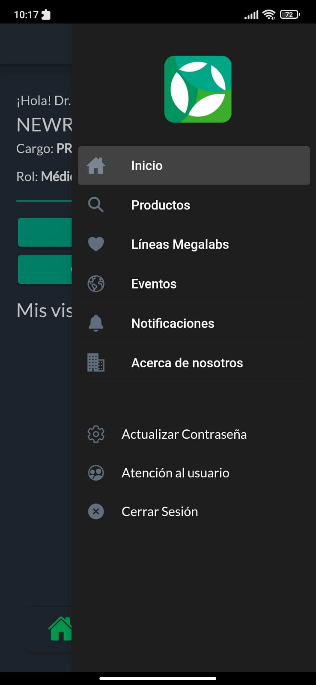
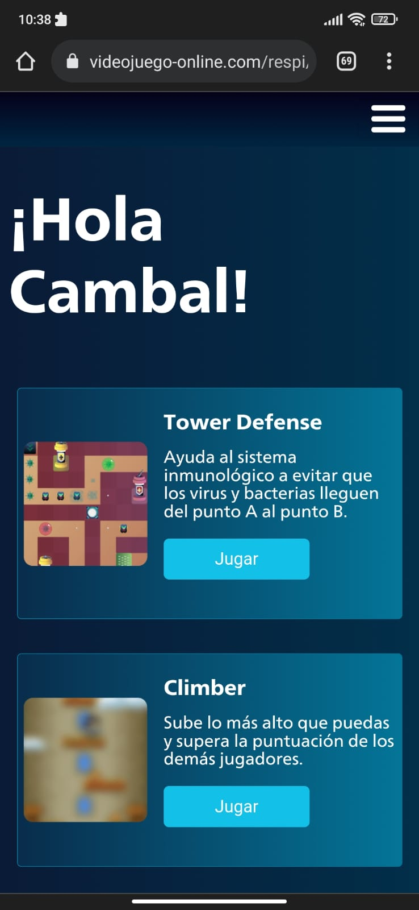
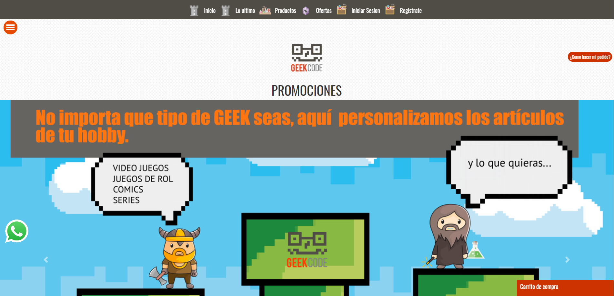

01
Servicios locales · Aplicación híbrida
Alfa Domicilios
Plataforma para la operación de servicios locales y domicilios en Fusagasugá. El trabajo documentado abarca la aplicación híbrida, backend, datos operativos e integraciones.
Portafolio · Colombia
Desarrollador Full Stack Productos digitales
Diseño, desarrollo y mejoro productos digitales que resuelven problemas reales. Trabajo en aplicaciones web y móviles, backend, integraciones y herramientas de automatización, desde la experiencia de usuario hasta el diagnóstico técnico.
Trabajo seleccionado
Una selección de sistemas y aplicaciones documentados con el nivel de detalle que puede compartirse públicamente.
Servicios locales · Aplicación híbrida
Plataforma para la operación de servicios locales y domicilios en Fusagasugá. El trabajo documentado abarca la aplicación híbrida, backend, datos operativos e integraciones.
Información y distribución digital
Proyecto de información local y publicación de contenido centrado en Fusagasugá.
Presentación técnica · información pública limitada
Prospección comercial
Herramienta para identificar y revisar prospectos, con datos geográficos, Google Places, validación de información y gestión controlada.
Herramienta en evolución · sin demo pública
Calidad y diagnóstico
Trabajo técnico para registrar, correlacionar y analizar incidentes: errores de frontend y backend, inconsistencias de estado y problemas de persistencia.
Marketing e integraciones
Herramientas de gestión y publicación de contenido conectadas con plataformas sociales. La evidencia disponible confirma integraciones; otras funciones se mantienen como trabajo en desarrollo.
Ingeniería aumentada
Uso herramientas de inteligencia artificial como apoyo para analizar, planear y validar trabajo técnico; la revisión, las decisiones de implementación y las pruebas siguen siendo parte de mi práctica de ingeniería.
Qué se muestra aquí: evidencia de uso asistido y exploración. No se presentan modelos propios, integraciones de IA en producción ni resultados cuantificados que no estén documentados.
Uso de agentes y herramientas de IA para revisar cambios, estructurar tareas, explorar causas de errores y apoyar la validación. El resultado se contrasta con el código, las pruebas y el contexto del producto.
La automatización forma parte del trabajo documentado en productos e integraciones. No hay evidencia en este repositorio de una API o flujo de IA desplegado, por lo que esa posible aplicación se presenta como línea de exploración.
Experimentación con herramientas generativas para recursos visuales, audiovisuales y piezas de contenido. No se atribuyen campañas, activos ni resultados comerciales sin evidencia pública asociada.
Casos de uso y controles
La IA puede apoyar el análisis de cambios y errores de aplicaciones como Alfa Domicilios. La contribución humana incluye definir el alcance, revisar código y validar el comportamiento antes de incorporar cambios.
Estado: uso asistido de ingeniería; no se documenta una integración de IA dentro del producto.El trabajo documentado de observabilidad aborda errores, estado y persistencia. Las herramientas de IA sirven como apoyo para formular hipótesis; los registros, pruebas y la verificación técnica determinan el diagnóstico.
Estado: metodología de apoyo; no hay métricas ni sistema de IA publicado en este repositorio.Los módulos de marketing e integraciones existentes abren un espacio para automatización y exploración generativa. Cualquier flujo que use IA se mantiene separado de las funciones ya verificadas.
Estado: exploración; requiere evidencia adicional para describirse como implementado.Archivo de proyectos
Proyectos anteriores preservados por su valor técnico y sus capturas originales.

Información de medicamentos, webinars y charlas para profesionales de salud.
HTML · Ionic · Sass · TypeScript · Firebase
Serie de juegos desarrollados en Unity y publicados para web mediante WebGL.
HTML · WebGL · CSS · JS · AJAX · PHPJuego de mesa digital y educativo sobre una campaña electoral en Colombia.
Angular · Sass · TypeScript · Firebase · Azure
Tienda virtual para la consulta de productos.
HTML · CSS · Bootstrap · JS · PHP · MySQLAplicación híbrida creada para un evento especial.
Ionic · Material · TypeScript · FirebaseForma de trabajar
Una práctica orientada a conectar producto, implementación y mantenimiento: construir una interfaz comprensible, integrarla con los sistemas que necesita y encontrar el origen cuando algo deja de funcionar.
Interfaces web y móviles, flujos de usuario y diseño adaptable.
Frontend, backend, bases de datos, APIs e integraciones.
Estado, persistencia, depuración de errores y diagnóstico de incidentes.
Tecnologías
Sin porcentajes arbitrarios: esta lista se limita a tecnologías respaldadas por el repositorio o el contexto técnico documentado.
Sobre mí
Mi trabajo se mueve entre el desarrollo de interfaces, aplicaciones híbridas, servicios backend e integraciones. Me interesa que los productos digitales respondan a una necesidad concreta y que también puedan diagnosticarse, corregirse y evolucionar.
Ver perfil profesionalContacto
Cuéntame el contexto y abriré una conversación por WhatsApp. También puedes escribirme por correo.
camibal1995@gmail.com